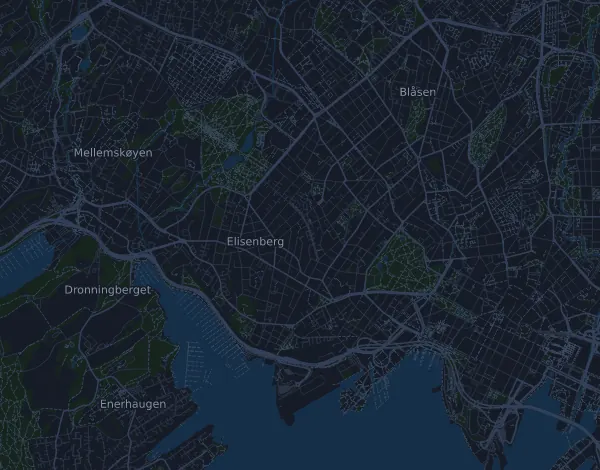

DNB Oslo Maraton – Maraton 42,7 km
- Distanz
- 42,7 km
- Höhenmeter
- ↑ 267 m
- Höchster Punkt
- 59 m ü. M.
- Untergrund
- Straße
- Profil
- Leicht wellig
- Start
- 09:00 Uhr
Höhenprofil
Mit Mila vorbereiten
Mila ist eine Lauf-Coach-App. Nimmst du einen Lauf in deinen Plan auf, plant der Coach deine Wochen bis zum Start nach deiner Form und gibt dir eine Zielzeitprognose und einen Plan für Tempo, Getränke und Verpflegung auf der Strecke.

Der richtige Lauf am richtigen Tag.
Die Strecke

Über die Strecke
DNB Oslo Maraton – Maraton ist ein Straßenlauf in Oslo, Norwegen, über 42,7 km. Die Strecke hat insgesamt 267 Höhenmeter bergauf und 267 bergab, 6,2 m pro km, und ist damit leicht wellig. Der höchste Punkt liegt auf 59 m ü. M., der tiefste auf 2 m.
Der größte Anstieg beginnt bei km 1,9: 47 Höhenmeter auf 3,3 km mit durchschnittlich 1,4 % Steigung, bis auf 59 m. Insgesamt hat die Strecke 4 Anstiege ab 25 Höhenmetern; der letzte beginnt bei km 29,7.
In der Mila-App beschreibt der Coach die Strecke ausführlich in deiner Sprache und plant dein Pacing und deine Verpflegung dafür.
Anstiege
| Beginnt bei | Länge | Höhenmeter | Steigung | Gipfel (m ü. M.) |
|---|---|---|---|---|
| km 1,9 | 3,3 km | 47 m | 1,4 % | 59 |
| km 8,3 | 9,1 km | 35 m | 0,4 % | 44 |
| km 23,2 | 3,3 km | 47 m | 1,4 % | 59 |
| km 29,7 | 9,1 km | 35 m | 0,4 % | 44 |
Vor dem Start
Startzeiten
- 09:00 Uhr
Quelle: oslomaraton.no, abgerufen am 15. Oktober 2026
Pace-Tabelle
DNB Oslo Maraton – Maraton 42,7 km in 3:00:00 – Pace pro km und Zwischenzeiten
4:13 pro km · km 10: 42:07 · km 21,1: 1:28:53 · km 30: 2:06:22 · km 40: 2:48:30 · Ziel: 3:00:00
DNB Oslo Maraton – Maraton 42,7 km in 3:30:00 – Pace pro km und Zwischenzeiten
4:55 pro km · km 10: 49:09 · km 21,1: 1:43:42 · km 30: 2:27:26 · km 40: 3:16:35 · Ziel: 3:30:00
DNB Oslo Maraton – Maraton 42,7 km in 4:00:00 – Pace pro km und Zwischenzeiten
5:37 pro km · km 10: 56:10 · km 21,1: 1:58:31 · km 30: 2:48:30 · km 40: 3:44:40 · Ziel: 4:00:00
DNB Oslo Maraton – Maraton 42,7 km in 4:30:00 – Pace pro km und Zwischenzeiten
6:19 pro km · km 10: 1:03:11 · km 21,1: 2:13:20 · km 30: 3:09:34 · km 40: 4:12:45 · Ziel: 4:30:00
Die Zeiten setzen ein gleichmäßiges Tempo auf der ganzen Strecke voraus. Das ist reine Rechnung, keine Prognose: an Anstiegen, im Gedränge und an Verpflegungsstellen schwankt das Tempo.
Häufige Fragen
Wann findet DNB Oslo Maraton – Maraton 42,7 km statt?
DNB Oslo Maraton – Maraton 42,7 km findet am Samstag, 18. September 2027 statt. Prüfe Datum und Startzeit beim Veranstalter.
Wann ist der Start bei DNB Oslo Maraton – Maraton 42,7 km?
Laut Veranstalter: 09:00 Uhr.
Wie lang ist DNB Oslo Maraton – Maraton 42,7 km und wie viele Höhenmeter hat die Strecke?
Der Lauf ist 42,7 km lang mit 267 Höhenmetern bergauf und 267 bergab. Der höchste Punkt liegt auf 59 m ü. M.
Wie ist die Strecke von DNB Oslo Maraton – Maraton 42,7 km?
Die Strecke ist leicht wellig, mit durchschnittlich 6,2 Höhenmetern pro km. Sie hat 4 Anstiege ab 25 Höhenmetern; der größte beginnt bei km 1,9: 47 Höhenmeter auf 3,3 km. Start und Ziel liegen am selben Ort. Der Untergrund ist Straße.
Wie teile ich mir DNB Oslo Maraton – Maraton 42,7 km ein?
Lauf eher mit gleichmäßiger Anstrengung als mit gleichmäßigem Tempo: Lass das Tempo an den Anstiegen sinken, hol es zurück, wo es flacher wird, und halte dich auf den ersten Kilometern zurück. Die größten Anstiege beginnen bei km 1,9, km 8,3, km 23,2 und km 29,7. In Mila bekommst du einen Pace-Plan für genau diese Strecke, passend zu deiner Form.
Ähnliche Läufe
Weitere Läufe in der Nähe
- Midnight Sun Marathon 42,2 km19. Juni 2027 · Tromsø, Norwegen
- Birkebeinerløpet 21 km12. Juni 2027 · Lillehammer (Birkebeineren skistadion), Norwegen
- Det Norske Fjellmaraton – Maraton (42,2 km)5. Juni 2027 · Heimsand (Sjodalen), Beitostølen, Norwegen
- Lofoten Ultra-Trail® // 50 miles 87,3 km5. Juni 2027 · Leknes, Norwegen
- EcoTrail Oslo – Trail 80 km29. Mai 2027 · Oslo (Nedre Foss park), Norwegen
- Sentrumsløpet 10 km24. April 2027 · Oslo, Norwegen
Mit Mila vorbereiten
Der richtige Lauf am richtigen Tag.
Die Angaben stammen aus der Streckendatei und den Informationen des Veranstalters. Prüfe Datum, Startzeiten und Regeln beim Veranstalter.
Mila ist nicht mit dem Veranstalter oder den Sponsoren des Laufs verbunden und wird von ihnen weder gesponsert noch empfohlen. Namen und Marken gehören ihren Inhabern. Veranstalter oder Rechteinhaber? Änderung oder Entfernung beantragen